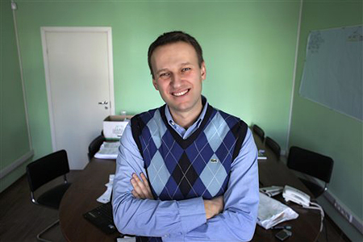

Алексей Навальный на олимпе политики появился не очень давно. Стал широко известен после противостояния миноритарного акционера в лице себя банку ВТБ, потом была «Транснефть», дальше больше. Технология была протестирована и Алексей двинулся дальше.

Ему удалось, о чем еще 10 лет назад только могла мечтать оппозиция. А 20 лет назад даже и мечтать не могла. Он объединил на себя большинство имеющих доступ в интернет россиян, которые сомневаются в курсе партии. Причём объединили не будучи явно ангажированным ни с одним из политическим движением в России. Разве что выражает иногда симпатии Немцову, но это оттого, что другой оппозиции просто нет.
Секрет взлёта Алексея держится Алексеем в секрете. Не пытаясь спрогнозировать политических катаклизмов попробую лишь собрать свои мысли здесь в кучу. Мысли мне кажутся логичными, ну и это мой личный блог всё-таки. А ответа мы всё равно не узнаем.
Успех Алексея не только в доступности новых технологий (они доступны всем, а Алексей один). Скрупулёзность, наблюдательность, образование умение выразить свои мысли словами понятным широкому кругу не опускаясь до уровня «а мне тут рассказали» тоже можно отнести к его достоинствам, но кажется и не это главное. Про «мохнатую руку Запада» даже рассуждать не хочется. Российские мохнатые руки не короче западных.
У меня сложилось стойкое впечатление, что Алексей Навальный в среднесрочной перспективе отстаивает интересы одного конкретного человека — нашего настоящего Президента.
Во-первых я ни разу не видел, чтобы он выступал с критикой в его адрес. Основной мишенью Навального стала партия «Единая Россия» и в особенностью её лидер, бывший президент.
Во-вторых для молодого человека с улицы Алексею слишком многое сходит с рук. Мы были свидетелями, когда с рук не сходило и не за такое. Это усиливает мысль о покровителе.
В-третьих российский дуумвират в последние месяцы демонстрирует внутренние разногласия. Думаю, что нам показывают далеко не все разногласия
В-четвёртых такой вариант вполне в духе it-подкованного Медведева
В-пятых это красиво, современно и высокотехнологично